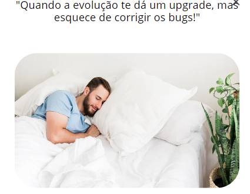
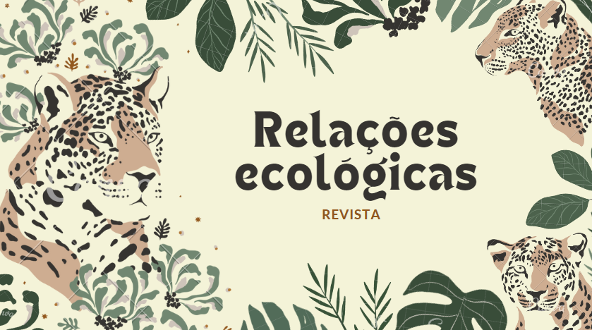
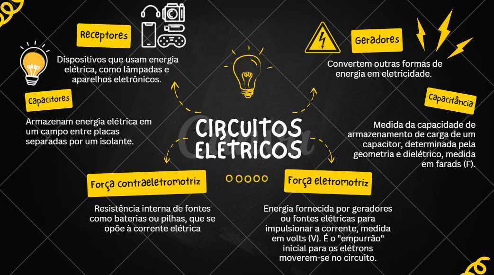
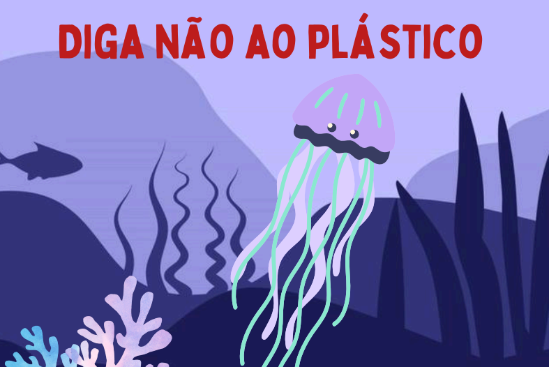
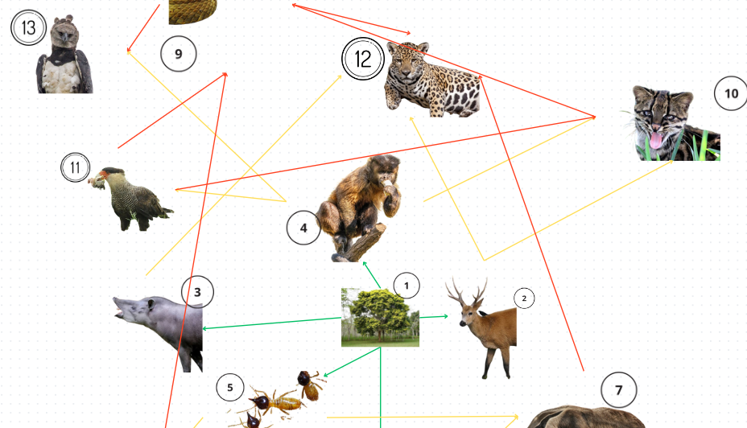
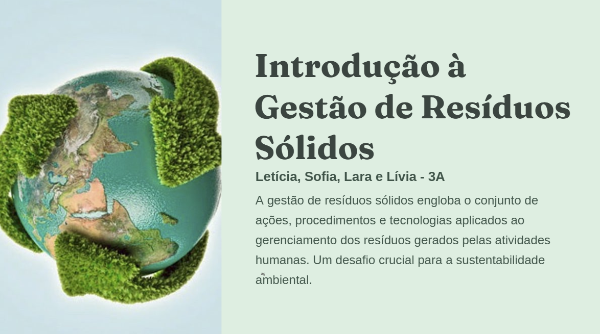
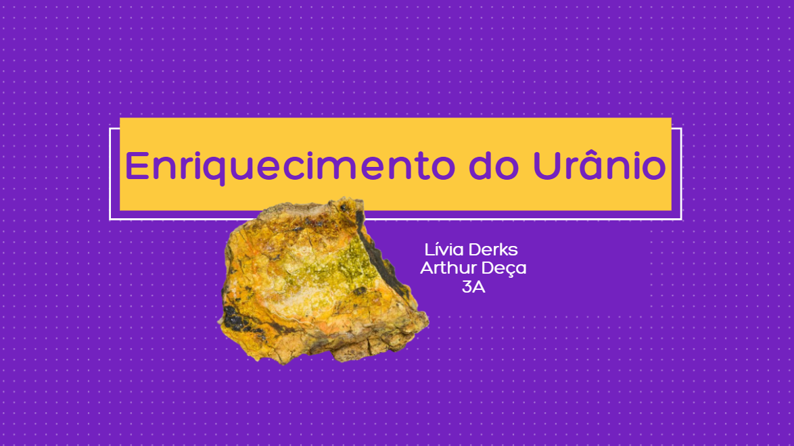
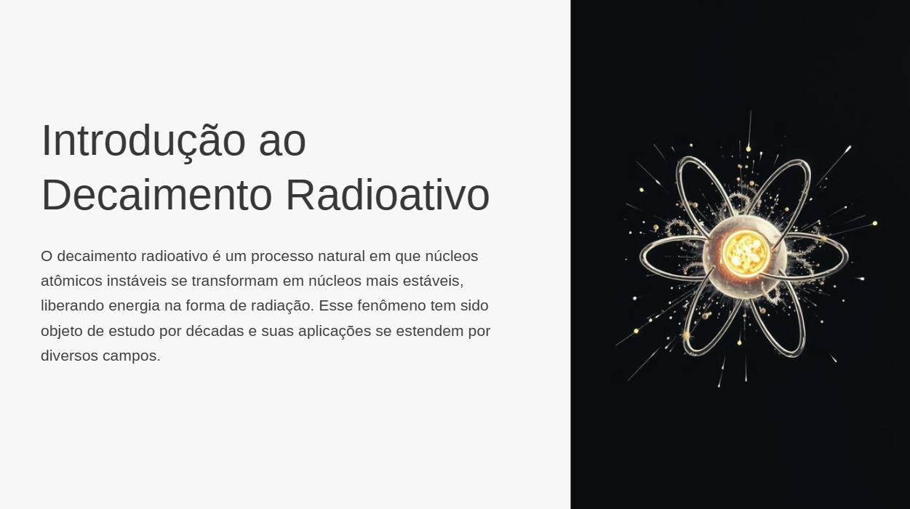

Evolucionismo 
Meme sobre o evolucionismo
Avaliação prática sobre Circuitos

O objetivo desta atividade prática foi compreender e experimentar as diferenças entre circuitos de resistores em série e em paralelo, explorando como a resistência total é afetada em cada configuração.
Revisão Orgânica

Apresentação sobre Orgânica, que explica os tópicos de Carbono, Petróleo, Hidrocarbonetos, Ligação Sigma e Pi, etc.
Atividade Autoral: Potência e Energia Elétrica

Atividade em dupla que foi criada uma lista sobre investimentos e impactos socioambientais e o uso da energia solar e seus gastos.
Relações ecológicas - Revista eletrônica 
Apresentação em dupla onde apresentamos o que são relações ecológicas e seus tipos.
Comentário pessoal
Fazer essa apresentação foi uma ótima oportunidade de aprofundar meu conhecimento sobre como os seres vivos interagem entre si e com o meio ambiente. Competências e Habilidades: C3 H15 H18Componentes dos circuitos elétricos 
Mapa mental sobre as variedades de circuitos elétricos.
Comentário pessoal
Fazer mapas mentais é uma boa maneira visual e organizada de entender como cada parte de um circuito funciona e se conecta, além de poder envolver um pouco de criatividade para faze-lo. Competências e Habilidades: C6 H35Cartaz - uso do plástico 
Cartaz informativo criado para conscientizar o uso de copos plásticos na escola.
Comentário pessoal
Eu gostei de fazer essa atividade porque envolveu muito da minha criatividade. Competências e Habilidades: C3 H15 H18Cadeia e teia alimentar 
Atividade em dupla onde fizemos uma teia alimentar no Canva.
Comentário pessoal
Gostei da atividade já que envolve um assunto de biologia que me interesso bastante. Competências e Habilidades: C3 H15 H18Desequilíbrios ambientais 
Apresentação em grupo sobre a Gestão de Resíduos Sólidos e seus impactos ambientais.
Comentário pessoal
O conteúdo destacou a importância da conscientização e das práticas sustentáveis para minimizar os danos ao meio ambiente. Competências e Habilidades: C5- H27 e H28Emissões radioativas 
Apresentação em dupla sobre o enriquecimento do urânio.
Comentário pessoal
Abordamos tópicos como etapas do processo, países que dominam a tecnologia, uilização em Usinas Nucleares, O caso Brasil, Controles Mundiais e curiosidades. Competências e Habilidades: 5 e 24, 25, 26, H27 e H28.Decaimento radioativo 
Atividade em grupo sobre o decaimento radioativo.
Comentário pessoal
Pesquisas sobre Isótopos Radioativos, Datação por Carbono-14, Resíduos Nucleares e Usos do Decaimento Radioativo na Indústria e Pesquisa. Competências e Habilidades: 5 e 24, 25, 26, H27 e H28.